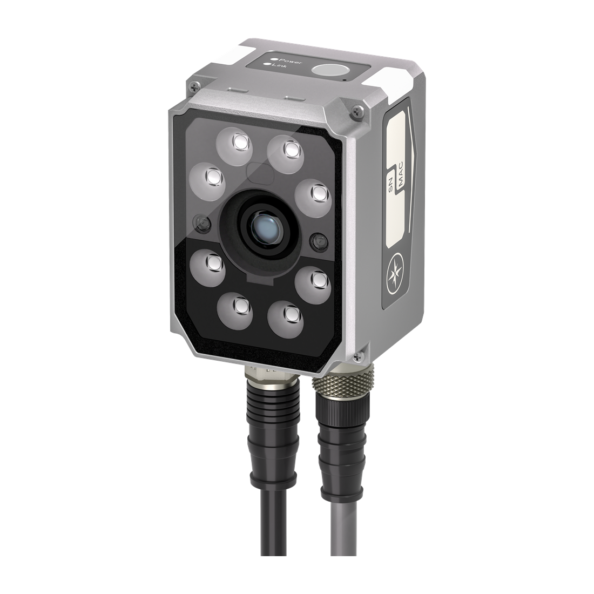
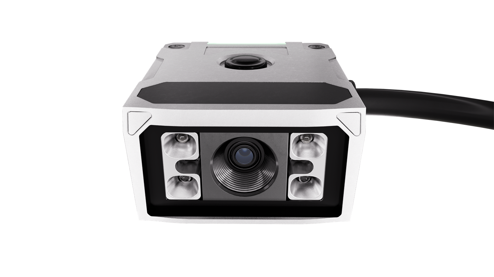
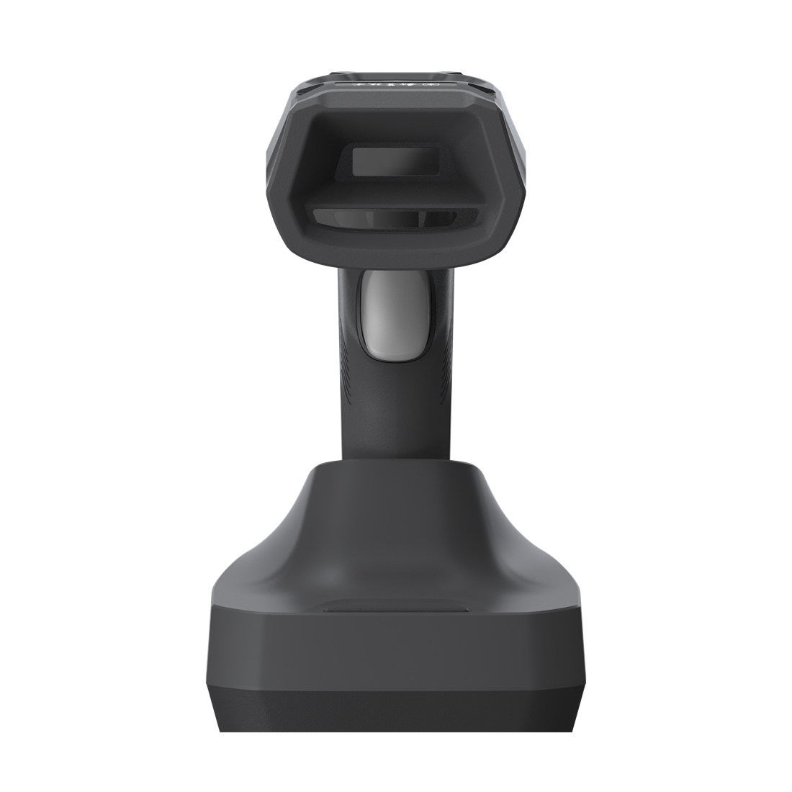

Machine-Mounted Reading
RS60, RS80-M, RS100-A / RS100-M, RS210, RS220, RS250, and RS290 for production lines, traceability stations, and equipment integration.
Barcode Reader Lineup
SJI provides fixed, compact, handheld, PDA, and software decoding options for industrial code reading. Overseas buyers can start from RS60, the RS200 family, and H620, or use this page to compare additional model families before sending an inquiry.



Product Navigation
Customers usually start from installation method and workflow. This page groups the reader lineup by fixed, compact, handheld, PDA, and software decoding needs before moving into the model matrix.
RS60, RS80-M, RS100-A / RS100-M, RS210, RS220, RS250, and RS290 for production lines, traceability stations, and equipment integration.
R170 / R172 and R270-A / R275-A readers for smaller machines, narrow positions, and embedded applications.
H620 and H920 for inspection, warehouse scanning, maintenance, and flexible production support.
D100 PDA and ES100 software decoding engine options can be discussed after confirming application needs.
Featured and Extended Models
Use the three featured models as the main sales entry. Additional model families are available for different mounting spaces, working distances, field-of-view requirements, and scanning workflows.
Featured Fixed Reader
Standard fixed industrial reader for production lines, compact equipment, and common 1D/2D code reading.
View RS60 DetailsFeatured High-Performance Reader
Higher-performance fixed reader family covering RS210, RS220, RS250, and RS290 for demanding scenarios.
Featured Handheld Reader
Handheld industrial reader for inspection, warehouse scanning, workstation reading, and flexible workflows.
View H620 DetailsFixed Reader Option
Fixed reader option with 6mm, 12mm, and 16mm lens configurations for production-line code reading.
Fixed Reader Option
Stable fixed reader family for machine builders and production teams that need a balanced standard reader.
Compact Reader
Compact reader options for embedded positions, small machines, and restricted installation spaces.
Compact Reader
Compact industrial reader option for embedded code reading positions and constrained machine layouts.
Convenient Reader
Convenient reader option for flexible code reading needs where a lighter deployment style is preferred.
Handheld Reader
Industrial handheld reader option with wired and wireless source materials available for selection.
Selection Reference
The following ranges help buyers narrow down the starting model family. Final model selection should be confirmed with code size, reading distance, field of view, line speed, and installation space.
| Series | Lens Options | Working Distance | FOV X | FOV Y | 1D Resolution | 2D Resolution | Suggested Positioning |
|---|---|---|---|---|---|---|---|
| RS60 | F5, F10 | 20-210 mm | 12-146 mm | 9-110 mm | 0.6-5.8 mil | 0.8-9.9 mil | Featured standard fixed reader |
| RS80 / RS80-M | 6mm, 12mm, 16mm | 30-1500 mm | 22.5-450 mm | 17-330 mm | 1.1-22.1 mil | 1.9-38.8 mil | Fixed reader option |
| NRS100A / RS100-A / RS100-M | 6mm, 12mm, 16mm | 30-1500 mm | 19-316 mm | 14-235 mm | 0.7-11.7 mil | 1.3-21.4 mil | Stable fixed reader family |
| RS210 | 8mm, 12mm, 16mm, 25mm | 50-1500 mm | 31-470 mm | 22-353 mm | 1.1-17.3 mil | 2.1-31.8 mil | RS200 family option |
| RS220 | 8mm, 12mm, 16mm, 25mm | 50-2000 mm | 35-1440 mm | 20-730 mm | 0.8-33.2 mil | 1.5-60.9 mil | RS200 family option |
| RS250 | 8mm, 12mm, 16mm, 25mm | 20-2000 mm | 29-1065 mm | 24-900 mm | 0.6-22.1 mil | 1.1-39.1 mil | RS200 family option |
| RS290 | 8mm, 12mm, 16mm, 25mm | 70-2000 mm | 45-1765 mm | 33-1320 mm | 0.5-19 mil | 1.1-42.1 mil | RS200 family option |
Additional Models
These product families are available for compact installation, handheld scanning, mobile data collection, or software decoding needs. Detailed specifications can be confirmed during model selection.
| Model / Family | Product Type | Typical Use | Inquiry Note |
|---|---|---|---|
| R170 / R172 | Compact reader | Embedded code reading positions and small equipment | Confirm working distance and installation space |
| R270-A / R275-A | Compact reader | Restricted-space installation and autofocus applications | Confirm code size, distance, and interface |
| RS220-C | C-mount fixed reader variant | Applications requiring external lens configuration | Confirm lens and imaging requirements |
| RS220-L | Verification-oriented fixed reader variant | Applications requiring grading or enhanced traceability review | Confirm inspection standard and code type |
| H620 | Featured handheld reader | Warehouse, inspection, workstation, and production support | Detail page available |
| H920 | Handheld reader | Wired or wireless handheld scanning workflows | Confirm wired / wireless requirement |
| C300 | Convenient reader | Flexible reading needs where lightweight deployment is preferred | Confirm application and quantity |
| D100 PDA | Mobile data terminal | Mobile barcode collection and warehouse workflows | Confirm system integration needs |
| ES100 | Software decoding engine | Software-based barcode decoding integration | Confirm platform and image input source |
Send your code type, code size, reading mode, working distance, field of view, line speed, interface requirement, and quantity. SJI can recommend a suitable reader family for quotation.